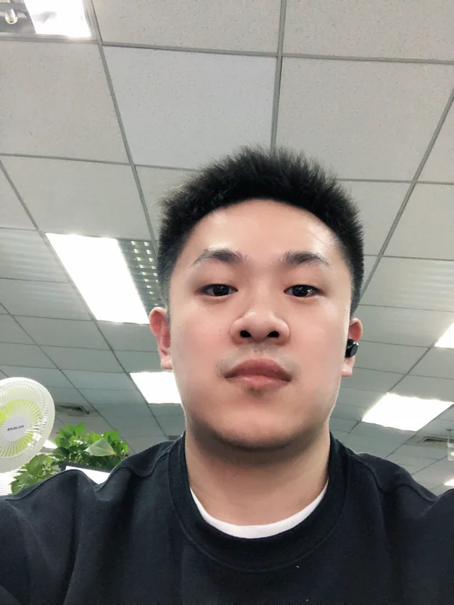

北京分音塔科技有限公司
银发产品设备端 UI、小程序优化、物料设计与规范；准儿机器人的表情及动作交互。

UI 视觉设计师 · 山西长治
关注界面里的秩序，
也在意体验中的温度。
毕业于山西大同大学视觉传达设计专业。工作覆盖移动应用、SaaS 系统、数据大屏与智能设备，在信息组织、视觉规范和多端体验之间建立一致性。也通过机器人表情、动态设计、AIGC 与三维创作，持续拓展表达方式。
银发产品设备端 UI、小程序优化、物料设计与规范；准儿机器人的表情及动作交互。
后台重症、围术期系统的界面与交互设计。
SaaS 系统、门户、数据大屏、App 与 H5 设计；结合用户体验完善设计流程与演示内容。
iOS、安卓、移动端、PC 与小程序界面设计；协同动画组完成视频剪辑。
从任务流程与信息层级出发，组织后台系统与多端界面，让功能更容易被理解和使用。
信息架构 · 交互流程 · 多端 UI将字体、色彩、组件与状态沉淀为可复用的视觉语言，连接产品设计与后续交付。
视觉系统 · 组件规范 · 设计交付结合动态、机器人表情、三维与生成式视觉，让适合的表达服务于具体场景。
情感交互 · 动态设计 · AIGC